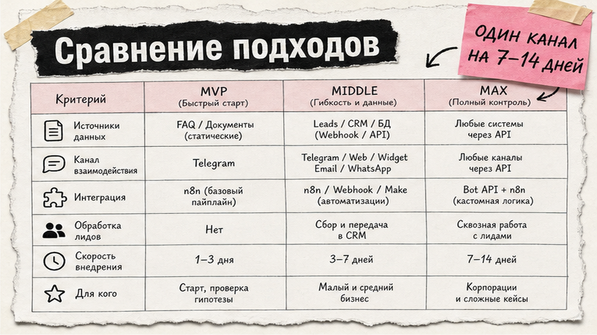
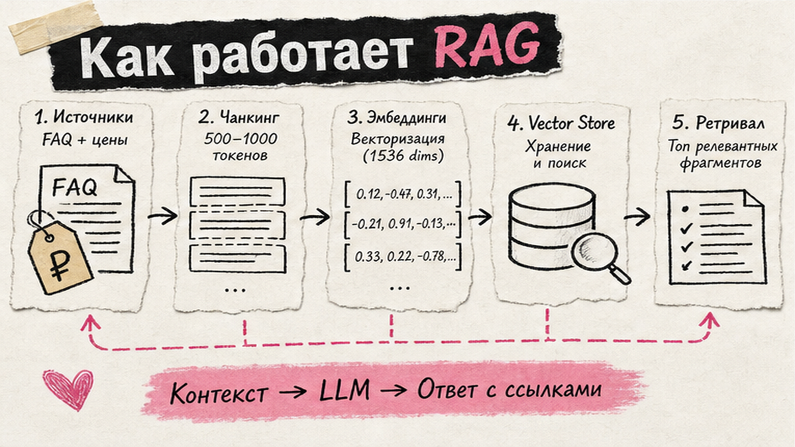
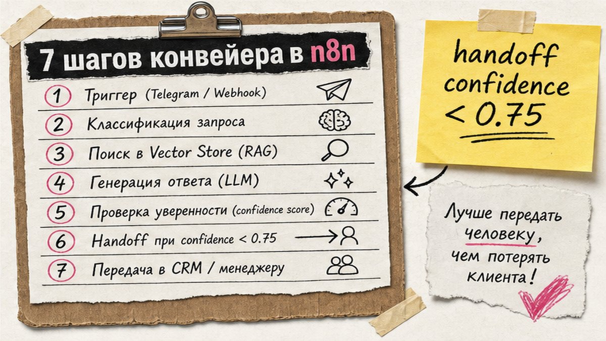

Рейтинги "лучших конструкторов" не учат собирать рабочего ИИ-бота: без базы знаний модель выдумывает цены и сроки, а без эскалации один неудачный ответ сжигает доверие клиента. RAG-чат-бот для бизнеса отвечает только из ваших FAQ и прайса, а при сомнении передаёт диалог человеку и пишет лид в CRM. Ниже - один сквозной workflow в n8n или Make: канал, Vector Store, handoff и метрики FCR за 7-14 дней. После гайда вы зафиксируете MVP-задачу, проиндексируете FAQ и прогоните 50 тест-кейсов до рекламы.
TL;DR / Быстрый инсайт: RAG (Retrieval-Augmented Generation) - это "шпаргалка из ваших документов": бот ищет ответ в FAQ, а не придумывает. Схема MVP: Telegram или Chat Trigger → AI Agent → Vector Store → ответ или эскалация → CRM. n8n силён в self-host и глубоком RAG; Make быстрее стартует без Docker. Перед продакшеном - 50-100 тест-кейсов и пилот с FCR 60-80%, CSAT и fallback ниже 20%.
RAG-чат-бот для бизнеса - это не "чат с ChatGPT на сайте". Это pipeline: входящее сообщение, поиск по базе знаний (векторное хранилище - база "отпечатков смысла" текста), ответ строго из найденных фрагментов и запись лида в amoCRM, Bitrix24 или Google Sheets. По данным McKinsey, 71% организаций уже используют gen AI минимум в одной функции - но около 40% проектов автономных агентов срываются из-за скрытых затрат и нулевого ROI, если нет human-in-the-loop (контроль человеком на критичных шагах).
Топ SERP по запросу "чат боты для бизнеса" - рейтинги SaaS без сквозной сборки. Здесь - практический how-to для FAQ L1 или квалификации лидов без программиста. Если нужна база по n8n AI Agent node, начните с гайда по автоматизации n8n; для подключения внешних сервисов к Cursor - статья про MCP.

На старте зафиксируйте одну primary-задачу: FAQ первой линии (часы, доставка, возврат) или квалификация лидов (имя, контакт, бюджет). Не запускайте три канала параллельно - отладка RAG и эскалации на одном канале быстрее.
| Задача | Канал | Инструмент |
|---|---|---|
| FAQ поддержки | Telegram Business | Telegram Trigger в n8n / модуль Telegram в Make |
| Лиды с сайта | Виджет / Webhook | Chat Trigger n8n / Instant Webhook Make |
| Аудитория в MAX | MAX Bot API | HTTP webhook на platform-api.max.ru (до 30 req/s) |
Telegram: BotFather → токен → Business mode → триггер с memory по chat_id. MAX: до 5 ботов на организацию (2 у самозанятого), токен после модерации в кабинете; закладывайте до 48 рабочих часов на проверку - это ориентир, не SLA.
Делайте: один канал + одна задача на 7-14 дней пилота. Не делайте: обещать клиентам "замену отдела поддержки" до метрик FCR (доля решённых без оператора) и CSAT.

Соберите FAQ, прайс, регламенты и отдельный список запретов: медицина, юридические советы, скидки без документа, персональные данные. RAG - стандартная практика для support-ботов: модель получает только retrieved context (найденные фрагменты), а не "весь интернет".
Нарежьте документы на chunks (куски) по 500-1000 токенов с overlap 100-200 (10-20%) - как перекрывающиеся страницы справочника. Для support-кейсов практикуют 800-1200 символов на chunk и top-k 3-5 фрагментов на запрос. Добавьте файл "что бот не делает" - это снижает выдумки.
Делайте: обновляйте базу при смене цен и регламентов. Не делайте: один PDF на 200 страниц без нарезки - поиск станет неточным.

Схема pipeline:
Сообщение (Telegram / Chat Trigger / MAX) → embed запроса → top-k из Vector Store → AI Agent + system prompt → IF низкая уверенность OR триггер-слово → handoff оператору + CRM → иначе ответ пользователю → лог (PII замаскирован)
Делайте: один CRM-tool на MVP (HTTP в amoCRM / модуль Sheets). Не делайте: 10 tools "на будущее" - модель путается.
Human-in-the-loop обязателен: автономные системы завершают менее 2,5% сложных неструктурированных задач без человека. Эскалируйте, если: факта нет в базе, жалоба, триггеры ("оператор", "возврат", "аллергия"), confidence ниже 0,75 (практический порог, не универсальный).
Switch/IF в n8n или Router в Make: уведомление оператору в Telegram/Slack + ticket в CRM с полным transcript. На время handoff ставьте pause bot для этого chat_id. При лиде - HTTP Request или нативный модуль CRM: имя, телефон, источник, summary диалога.
Делайте: передавать оператору всю историю, не последнее сообщение. Не делайте: скрывать от пользователя, что ответил бот - это бьёт по CSAT при ошибке.
| Критерий | n8n | Make.com |
|---|---|---|
| Старт без DevOps | Cloud trial; Starter от 20 €/мес, 2500 executions | Free 1000 credits/мес; регистрация за минуты |
| RAG и контроль данных | Self-hosted CE бесплатно + свой vector store | Облако Make, 3000+ интеграций из коробки |
| AI Agent | Tools Agent, Vector Store Tool, MCP | Make AI Agents, Reasoning panel |
| Ориентир бюджета стека | CE + VPS + API LLM ≈ от $150/мес | Credits + API LLM; AI-модули дороже обычных |
Итоговый вердикт: n8n - если нужен self-host, глубокий RAG и данные на своём сервере. Make - если команда no-code и типовые CRM/Telegram без Docker. Оба пути собирают одного и того же RAG-бота; разница в скорости старта и админке.
Если Make ближе по стеку, разберите модульную сборку на курсе Make.com (подписка 5 800 ₽/мес, 159+ уроков) - там же сценарии AI Agents с CRM без кода.
Делайте: запускать рекламу только после PASS по критичным кейсам (цены, возвраты, медицина). Не делайте: публиковать бота без логирования - разобрать ошибку потом невозможно.
Вопросы по Make-сценариям - в Telegram "Ковчег" или на курсе Make с разбором вашего кейса.
Материал проверен: эксперт Артур Хорошев (CEO Maya AI, практик Make.com и чат-ботов с RAG).
Достоверность данных: лимиты MAX, тарифы n8n/Make, параметры RAG и метрики McKinsey верифицированы по первоисточникам на 21.06.2026. Объёмы Яндекс Вордстат по primary query будут уточнены отдельной проверкой MCP.
Зафиксируйте одну задачу (FAQ или лиды), выберите канал и соберите workflow в n8n или Make: триггер → AI Agent → Vector Store → CRM. При готовом FAQ MVP занимает 3-7 дней; без базы знаний не запускайте - будет галлюцинации.
Конструктор без RAG отвечает "из головы" модели. RAG подтягивает ваши документы перед ответом. Настройте system prompt "только из контекста" и эскалацию, если chunk не найден.
n8n Community Edition бесплатен, но нужны сервер и оплата API LLM. Make Free даёт 1000 credits/мес. "Бесплатно без RAG" - риск выдуманных цен; минимум - vector store и тест-кейсы.
BotFather → токен → Business mode → Telegram Trigger в n8n или модуль в Make → memory по chat_id → 20 тестовых диалогов до рекламы. Проверьте эскалацию на фразу "оператор".
На MVP - не обязателен. Добавляйте MAX после стабильных FCR/CSAT в Telegram; учитывайте модерацию до 48 рабочих часов и лимит 5 ботов на организацию.
Нет факта в базе, жалоба, медицина/юридические темы, низкая confidence, триггер-слова. Передавайте полный transcript в CRM и ставьте pause bot для этого chat_id до ответа человека.